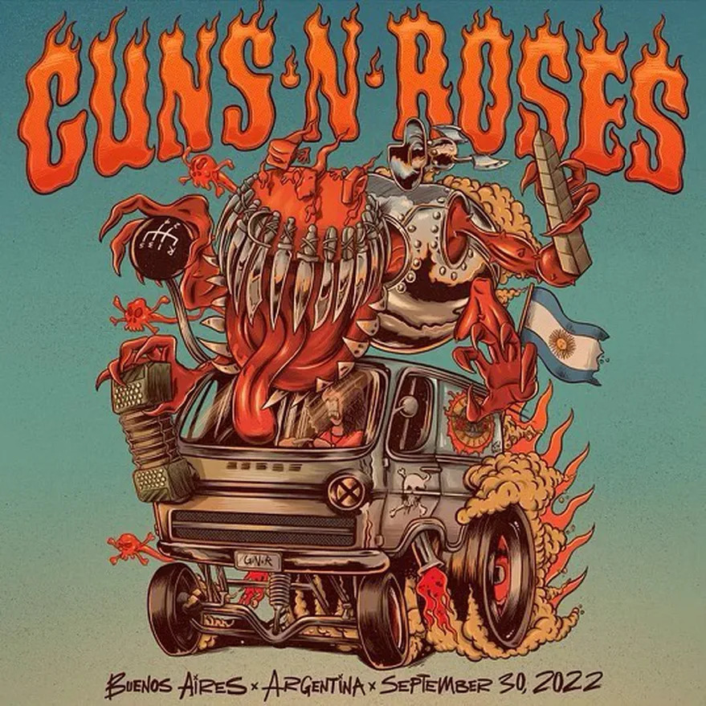

Guns N' Roses
Luego de cinco años, los Guns vuelven a la Argentina, en el estadio de River plate

¡Algunas posibilidades que pueden volverse realidad, animate a elegirlas!
Luego de cinco años, los Guns vuelven a la Argentina, en el estadio de River plate
.jpg)
Cuarteto de Nos presenta su nuevo disco en el marco de su Tour 2022-2023. Un regreso a los shows en vivo que arrancó con todas sus fechas de 2022 SOLD OUT, en cada ciudad y país que visitaron, al que agregan el lanzamiento de su tan esperado NUEVO DISCO para mitad de año.

Mon Laferte decidió cuando era una niña que quería cantar, desde su natal Valparaíso en Chile. Y así lo ha hecho toda su vida. Desde su base pop se pasea por la canción popular latinoamericana, el bolero, la cumbia, la ranchera, el rock, la electrónica y cuanto género exista que le haga sentido para transmitir lo que quiera decir. En ella no hay prejuicios.

Este bar pertenece al selecto grupo de "Bares Notables" de la Ciudad de Buenos Aires, este grupo tiene como principal característica el ser los bares más representativos de la ciudad y estar oficialmente apoyados por programas oficiales del Gobierno de la Ciudad de Buenos Aires.